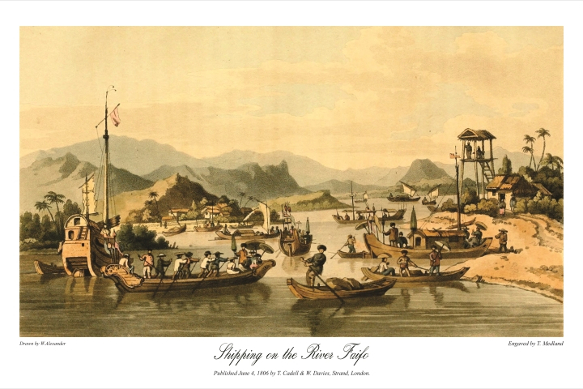

Nằm bên dòng sông Thu Bồn hiền hòa, Hội An thuộc tỉnh Quảng Nam, cách
thành phố Đà Nẵng khoảng 30 km về phía Nam.
Từ thế kỷ XV đến XIX, nơi đây từng là thương cảng sầm uất của Đàng Trong, nơi giao thương giữa thương
nhân Nhật Bản, Trung Hoa, Bồ Đào Nha, và Hà Lan.
Sự pha trộn văn hóa đa
quốc gia in dấu lên từng mái ngói rêu phong, tạo nên diện mạo độc đáo cho
phố cổ. Năm 1999, UNESCO công nhận Hội An là Di sản Văn hóa Thế giới nhờ
giá trị kiến trúc và lịch sử được bảo tồn nguyên vẹn.

Hội An thế kỉ 16
Về địa lý, Hội An sở hữu vị trí đắc địa: phía Đông giáp biển Đông với bãi biển Cửa Đại nổi tiếng, phía Tây là vùng nông thôn trù phú với làng rau Trà Quế,
làng gốm Thanh Hà. Khí hậu nhiệt đới ẩm gió mùa tạo nên hai mùa rõ rệt, thuận lợi cho du lịch quanh năm.
Dòng sông Thu Bồn không chỉ là huyết mạch giao thương xưa mà còn là linh hồn của những lễ hội đèn hoa đêm rằm.
Đặc điểm
Hội An là bảo tàng sống của kiến trúc cổ. Phố cổ với những con đường hẹp lát đá, những ngôi nhà gỗ hàng trăm tuổi mang phong cách Á - Âu hòa quyện.
Cầu Chùa Nhật Bản (Lai Viễn Kiều) biểu tượng của thành phố, xây dựng từ thế kỷ XVII, là minh chứng cho mối giao lưu văn hóa Việt - Nhật.
Các hội quán như Phúc Kiến, Quảng Đông với mái cong lợp ngói âm dương, tượng thờ tinh xảo, thu hút du khách tham quan.
Đêm xuống, Hội An khoác lên mình vẻ đẹp ma mị với hàng ngàn chiếc đèn lồng đủ sắc màu. Nghề làm đèn thủ công truyền thống
vẫn được gìn giữ, biến mỗi góc phố thành khung tranh lung linh.
Bên cạnh đó, Hội An còn nổi tiếng với nghề may đo veston - nơi bạn có thể sở hữu bộ trang phục vừa vặn chỉ sau 24 giờ. Chùa cầu Nhật Bản
Ẩm thực
Ẩm thực Hội An là sự kết tinh của hương vị truyền thống và sáng tạo.
Món Cao Lầu, sợi mì dai dai ăn kèm thịt heo, rau sống và nước dùng đậm đà, là đặc sản không thể bỏ qua, được chế biến từ nguồn nước giếng Bá Lễ đặc trưng.
Bánh Mì Phượng nổi tiếng khắp thế giới nhờ lớp nhân thịt nướng, pate béo ngậy và rau chua ngọt hài hòa. Đến đây, bạn còn được thưởng thức Bánh Bao - Bánh Vạc (hay Bánh Trắng Trắng),
những chiếc bánh nhỏ xinh làm từ bột gạo,
nhân tôm thịt, thường được gọi là “bánh hoa trắng” nhờ lớp vỏ mỏng tinh tế.
Các lớp học nấu ăn tại địa phương là trải nghiệm thú vị để khám phá bí quyết ẩm thực. Du khách có thể tự tay làm mì Quảng, gói bánh ít lá gai,
hay học cách pha chế nước mắm “chuẩn Hội An”, vị mặn ngọt cân bằng làm nên linh hồn của mỗi món ăn.
`
Lễ hội đèn
Khi màn đêm buông xuống, Hội An biến thành thế giới của ánh sáng và sắc màu với lễ hội đèn hoa đăng diễn ra vào mỗi đêm 14 âm lịch hàng tháng. Tất cả thiết bị điện đều tắt,
thay vào đó là ánh sáng dịu dàng từ hàng ngàn chiếc đèn lồng giấy, đèn hoa đăng thả trôi trên sông. Người dân và du khách cùng thả những chiếc đèn nhỏ mang theo ước nguyện,
tạo nên khung cảnh lãng mạn tựa cổ tích.
Lễ hội bắt nguồn từ phong tục thờ cúng tổ tiên và cầu mong bình an của người Việt xưa. Đèn lồng đỏ tượng trưng cho may mắn, vàng cho tài lộc, xanh lá cho hy vọng.
Du khách có thể mua đèn từ các cửa hàng dọc phố, tự viết điều ước lên thân đèn trước khi thả. Dọc hai bên bờ sông, những nghệ nhân biểu diễn hát Bài Chòi, múa Thiên Cẩu,
hay trình diễn nghệ thuật làm đèn lồng.
Không khí lễ hội càng thêm sống động với những trò chơi dân gian như đập niêu, kéo co, hay phiên chợ đêm ồn ào bán đồ thủ công, đồ ăn đường phố.
Mùi hương trầm thoang thoảng hòa quyện cùng tiếng đàn tranh du dương từ các quán cà phê cổ khiến Hội An trở thành bản giao hưởng của quá khứ và hiện tại.
Kết thúc hành trình
Hội An để lại trong lòng du khách những dư vị khó quên. Nơi đây không chỉ là điểm đến của những bức ảnh “sống ảo” mà còn là không gian để tìm về sự bình yên.
Từng viên gạch rêu phong, tiếng rao đêm của những gánh hàng rong, đến nụ cười hiền hậu của người bán đèn lồng.
Tất cả tạo nên một Hội An vừa cổ kính, vừa tràn đầy sức sống.
Hội An như một bức thư tình được viết bằng ánh sáng, lưu giữ tinh hoa nghìn năm trong từng hơi thở hiện đại.
Dù là người yêu lịch sử, đam mê ẩm thực, hay chỉ đơn giản muốn đắm mình trong không gian huyền ảo, bạn đều sẽ tìm thấy điều kỳ diệu riêng ở miền đất di sản này.